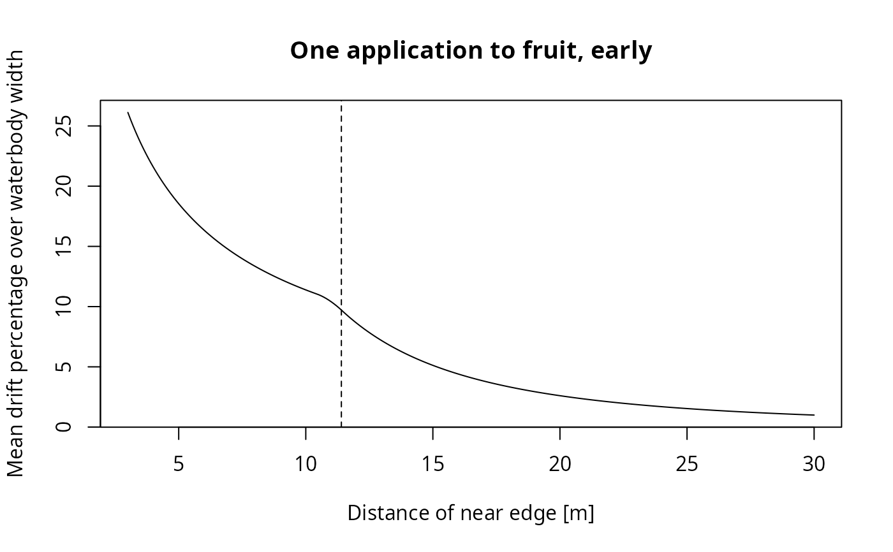

Calculate drift percentages based on Rautmann data
Source:R/PEC_sw_drift.R
drift_percentages_rautmann.RdCalculate drift percentages based on Rautmann data
Arguments
- distances
The distances in m for which to get PEC values
- applications
Number of applications for selection of drift percentile
- crop_group_RF
One of the crop groups as used in drift_parameters_focus
- formula
By default, the original Rautmann formula is used. If you specify "FOCUS", mean drift input over the width of the water body is calculated as described in Chapter 5.4.5 of the FOCUS surface water guidance
- widths
The widths of the water bodies (only used in the FOCUS formula)
References
FOCUS (2014) Generic guidance for Surface Water Scenarios (version 1.4). FOrum for the Co-ordination of pesticde fate models and their USe. http://esdac.jrc.ec.europa.eu/public_path/projects_data/focus/sw/docs/Generic%20FOCUS_SWS_vc1.4.pdf
Examples
# Compare JKI data with Rautmann and FOCUS formulas for arable crops (default)
# One application on field crops, for 1 m, 3 m and 5 m distance
drift_data_JKI[[1]][as.character(c(1, 3, 5)), "Ackerbau"]
#> 1 3 5
#> 2.77 0.95 0.57
drift_percentages_rautmann(c(1, 3, 5))
#> [1] 2.7593000 0.9424748 0.5719342
drift_percentages_rautmann(c(1, 3, 5), formula = "FOCUS")
#> [1] 1.9273922 0.8160023 0.5224362
# One application to early or late fruit crops
drift_data_JKI[[1]][as.character(c(3, 5, 20, 50)), "Obstbau frueh"]
#> 3 5 20 50
#> 29.20 19.89 2.77 0.30
drift_percentages_rautmann(c(3, 5, 20, 50), crop_group_RF = "fruit, early")
#> [1] 29.1973659 19.8844422 2.7618138 0.3012008
drift_percentages_rautmann(c(3, 5, 20, 50), crop_group_RF = "fruit, early",
formula = "FOCUS")
#> [1] 26.1193421 18.5428680 2.6038558 0.2940792
drift_data_JKI[[1]][as.character(c(3, 5, 20, 50)), "Obstbau spaet"]
#> 3 5 20 50
#> 15.73 8.41 1.09 0.22
drift_percentages_rautmann(c(3, 5, 20, 50), crop_group_RF = "fruit, late")
#> [1] 15.7246994 8.4108487 1.0813887 0.2155992
drift_percentages_rautmann(c(3, 5, 20, 50), crop_group_RF = "fruit, late",
formula = "FOCUS")
#> [1] 13.1414350 7.5123244 1.0359007 0.2118734
# We get a continuum if the waterbody covers the hinge distance
# (11.4 m for 1 early app to fruit)
x <- seq(3, 30, by = 0.1)
d <- drift_percentages_rautmann(x, crop_group_RF = "fruit, early", formula = "FOCUS")
plot(x, d, type = "l",
xlab = "Distance of near edge [m]",
ylab = "Mean drift percentage over waterbody width",
main = "One application to fruit, early")
abline(v = 11.4, lty = 2)
